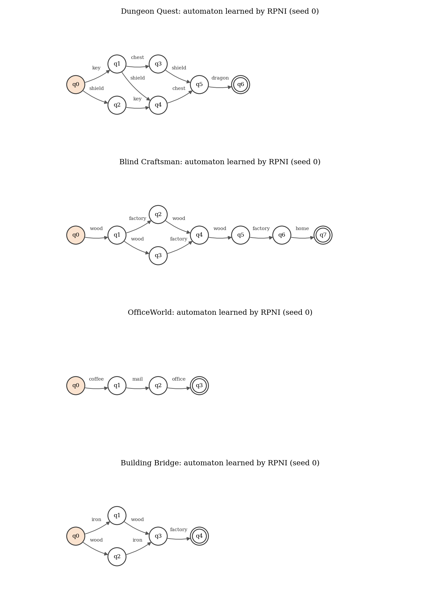
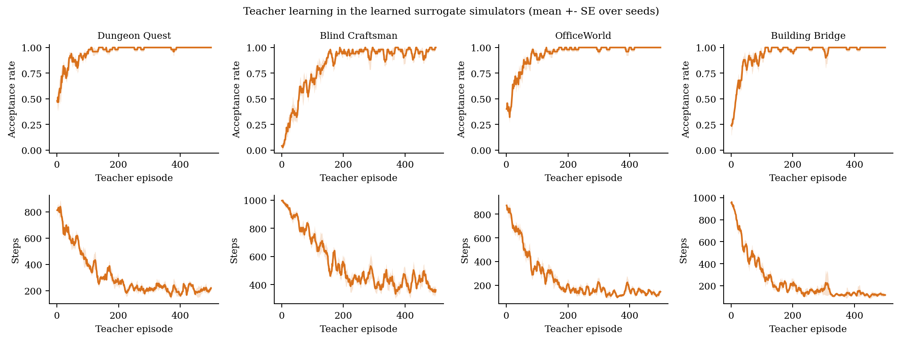
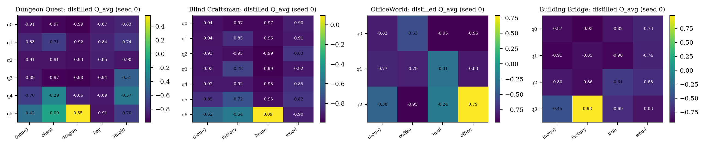
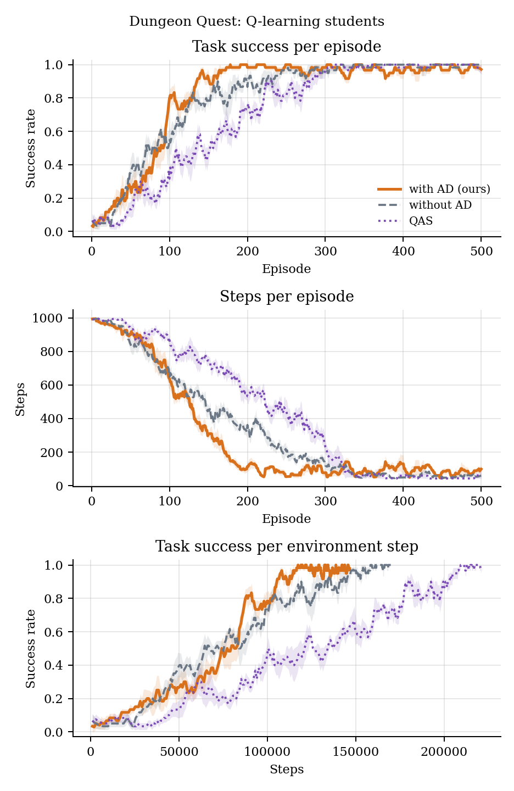
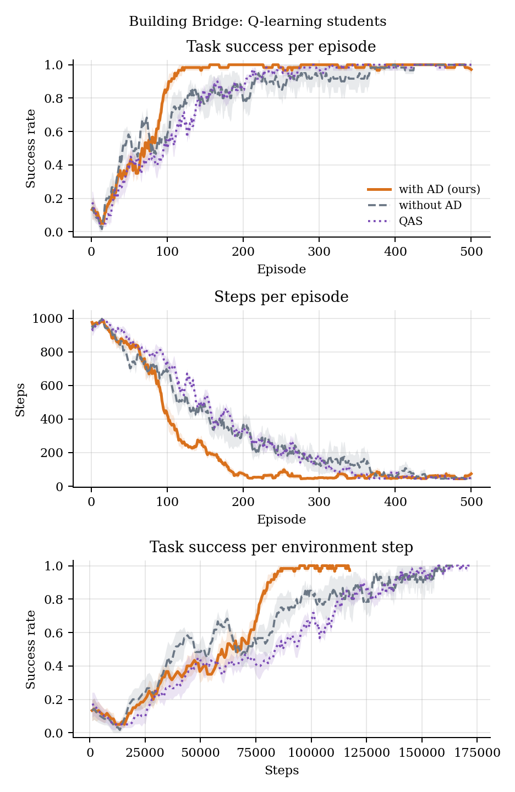
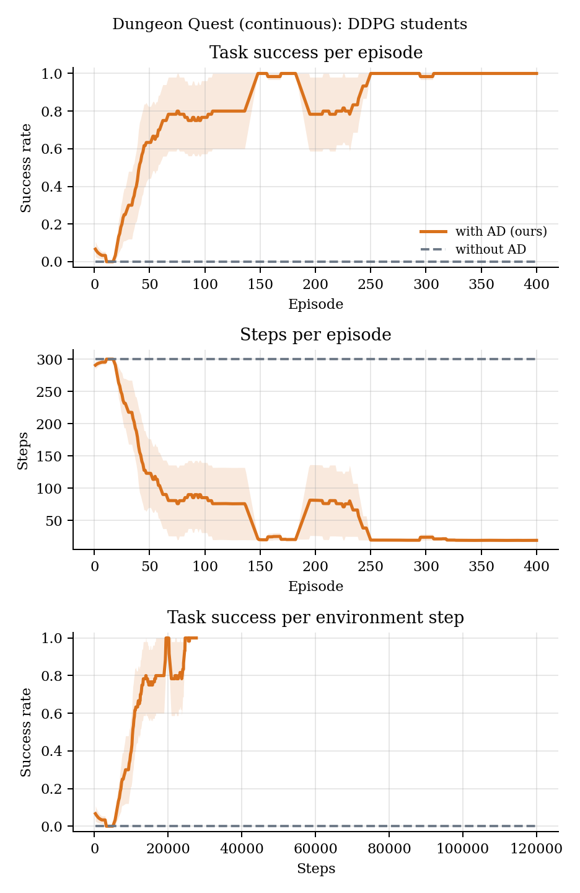
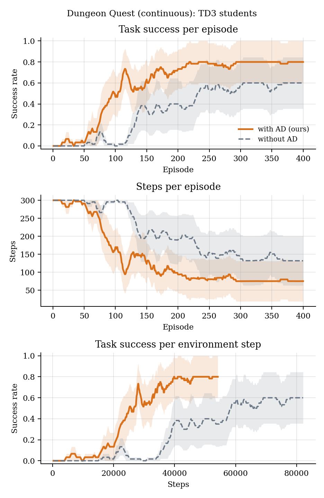

TL;DR Learn the task's automaton and a simple teacher simulator from offline data, train a teacher there, and distil what it learned back into the real environment. Nothing about the task is given: the automaton, the simulator and the teacher's knowledge all come from logged successes and failures.
Abstract
We propose a bidirectional end-to-end reinforcement learning (RL) framework for solving complex non-Markovian tasks in discrete and continuous environments. Instead of directly learning policies in high-dimensional spaces, we first construct a simplified teacher model as a surrogate environment from offline trajectories. Simultaneously, we infer a Deterministic Finite Automaton (DFA) using the RPNI algorithm to capture task dependencies. A policy is learned in the surrogate environment and transferred to the original domain via automaton distillation, which guides policy learning more effectively than direct RL in the original environment. Our framework integrates DQN for discrete tasks and DDPG/TD3 for continuous settings. Empirical results demonstrate that this structured transfer significantly improves learning efficiency, and convergence speed, outperforming standard RL baselines.
What is learned from data alone
- The task automaton. Label traces of the offline trajectories (e.g.
key chest shield dragon) feed RPNI, which recovers the true task structure in every environment. - The teacher's environment. Student states are mapped onto a small grid (e.g. 20×20 → 5×5) and the transitions, with the labels they emit, are counted with Laplace smoothing. On independent data the learned simulator predicts 68–81% of transitions as its most likely outcome.
- The teacher's knowledge. A teacher trained in the learned simulator and automaton reaches 96–100% task completion there; its values, averaged per automaton transition, are highest where the task is completed.



Results
Discrete students (Q-learning)
| Environment | Episodes to 90%: with AD | without AD | QAS |
|---|---|---|---|
| Dungeon Quest | 134 | 156 | 249 |
| Blind Craftsman | 234 | 271 | never (0/5) |
| OfficeWorld | 88 | 113 | 131 |
| Building Bridge | 113 | 179 | 177 |
5 seeds per method; each seed runs the whole pipeline from its own offline dataset. Student grids are the paper's layouts scaled by 2 (Bridge at the paper's size). QAS sees the true task progress but has no automaton.


Continuous students (DDPG and TD3)
| Learner | Method | Episodes to 90% | Success (all episodes) | Success (last 50) |
|---|---|---|---|---|
| DDPG | with AD | 81 | 0.83 | 1.00 |
| without AD | never (0/5) | 0.00 | 0.00 | |
| TD3 | with AD | 124 (4/5) | 0.59 | 0.80 |
| without AD | 203 (3/5) | 0.34 | 0.59 |


Try it
git clone https://github.com/mahyar333/Bidirectional-RL.git && cd Bidirectional-RL
pip install -e ".[dev]"
python -m bidirectional.run --config configs/dungeon_quest.yaml --learner tabular # data → DFA → simulator → teacher → students
python -m bidirectional.teacher_report --configs configs --out assets # what the teacher learnedPython 3.9+, MIT license. See the repository for the full documentation.
BibTeX
@inproceedings{alinejad2025bidirectional,
title = {Bidirectional End-to-End Framework for Transfer from Abstract Models in Non-Markovian Reinforcement Learning},
author = {Alinejad, Mahyar and Nwaorgu, Precious and Enyioha, Chinwendu and Wang, Yue and Velasquez, Alvaro and Atia, George},
booktitle = {Proceedings of the International Conference on Neuro-symbolic Systems (NeuS)},
series = {Proceedings of Machine Learning Research},
volume = {288},
pages = {643--660},
year = {2025},
url = {https://proceedings.mlr.press/v288/alinejad25a.html}
}